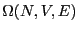
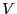
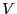
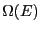
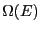
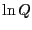
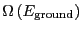

Next: Classical Statistical Mechanics
Up: Statistical Mechanics: A Brief
Previous: Making Observations: The Ergodic
Eq. 2.1 introduced the quantity  as
the number of states available to a system under the constraints of
constant number of particles,  , volume, , and energy
, volume, , and energy  . The
fundamental postulate of statistical mechanics, also called the
``rational basis'' by Chandler, is the following:
. The
fundamental postulate of statistical mechanics, also called the
``rational basis'' by Chandler, is the following:
In statistical equilibrium, all states consistent with the constraints
of , , and are equally probable.
or
This relation is often referred to as a statement of the ``equal a priori probabilities in state space.'' Another way of saying the
same thing: The probability distribution for states in the
microcanonical ensemble is uniform.
The link between statistical mechanics and classical thermodynamics is
given by a definition of entropy:
Note two important properties of  . First, it is extensive: if we
consider a compound system made of subsystems
. First, it is extensive: if we
consider a compound system made of subsystems  and
and  with
and as the respective number of states, the
total number of states is
with
and as the respective number of states, the
total number of states is
 , and therefore . Second, it is consistent with the second law of thermodynamics:
putting any constraint on the system lowers its entropy because the
constraint lowers the number of accessible states.
, and therefore . Second, it is consistent with the second law of thermodynamics:
putting any constraint on the system lowers its entropy because the
constraint lowers the number of accessible states.
Temperature is defined using entropy:
, or
Now we will consider constraining our system not with constant ,
but with constant  . The set of all possible states satisfying
constraints of , , and is called the canonical
ensemble. Contrary to appearances based on their names, the canonical
ensemble can be envisioned as a subsystem in a larger, microcanonical
system. Consider such a system divided into a small subsystem ,
surrounded by a large ``bath'' . We imagine that these two
subsystems are ``weakly coupled,'' meaning they exchange only thermal
energy, but no particles, and their volumes remain fixed. We seek to
compute the probability of finding the total system in a state such
that subsystem has energy . The entire system is
microcanonical, so the total energy, is constant, as is the total
number of states available to the system,  (we omit the
and for simplicity).
. The set of all possible states satisfying
constraints of , , and is called the canonical
ensemble. Contrary to appearances based on their names, the canonical
ensemble can be envisioned as a subsystem in a larger, microcanonical
system. Consider such a system divided into a small subsystem ,
surrounded by a large ``bath'' . We imagine that these two
subsystems are ``weakly coupled,'' meaning they exchange only thermal
energy, but no particles, and their volumes remain fixed. We seek to
compute the probability of finding the total system in a state such
that subsystem has energy . The entire system is
microcanonical, so the total energy, is constant, as is the total
number of states available to the system,  (we omit the
and for simplicity).
When has energy , the total system energy is ,
where is the energy of the bath. By constraining system 's
energy, we have reduced the number of states available to the whole
system to . So, the probability of observing the
system in a state in which subsystem has energy looks like
We can expand
in a Taylor series around :
|
 |
|
(13) |
| |
|
|
(14) |
where the partial derivative implies we are holding and fixed.
We can truncate the Taylor expansion at the first-order term, because
higher order terms become less and less important as the size of
subsystem becomes larger and larger. What results is the
Boltzmann distribution law for energies of a system at constant
temperature:
The normalization condition requires that for all energies of subsystem , ,
which defines the canonical partition function,  . Therefore,
. Therefore,
Because some energies can correspond to more than one microstate, we
should distinguish between ``states'' and ``energy levels.'' We can
express the canonical partition function as
where, as we have seen,
is the number of
microstates with energy . Moving to the continuum limit, and
assuming a reference energy of ,
where
is the density of states.
What is this equation telling us? It is telling us that is the
Laplace transform of
 . We know that transform
pairs are unique, and hence, both and
contain the same information.
. We know that transform
pairs are unique, and hence, both and
contain the same information.
We recognize that for a system described by a canonical ensemble, the
energy is a fluctuating quantity. And we now have the probability of
observing a state with a given energy, so we can use
Eq. 1 to compute the average energy,
. Consider
Notice that
Recalling that
, we see that
Now, let us consider the average magnitude of the fluctuations in energy
in the canonical ensemble.
Now, noting that the definition of heat capacity at constant volume, ,
is
we see that
This is an interesting statement. It relates the magnitude of
spontaneous fluctuations in the total energy of a system to that
system's capacity to store or release energy due to changing its
temperature.
The fact (Eq. 24) that the average energy in the
canonical ensemble is related to a derivative of the log of the
partition function implies that  is an important thermodynamic
quantity. So, let's go back to our undergraduate thermodynamics
course(s) and recall the following statement of the 1st and 2nd Law:
where is the Helmholtz free energy, defined in terms of
internal energy and entropy as
Now, consider the following derivative of :
|
|
|
(34) |
| |
|
|
(35) |
Therefore,
Considering Eq. 24, we see that
 |
(37) |
which does indeed suggest an important link between and the
important thermodynamic quantity, the Helmholtz free energy. But what
is the constant  ? To evaluate it, consider the ``boundary condition''
as
:
? To evaluate it, consider the ``boundary condition''
as
:
Here, we have assumed that the degeneracy of the ground state,
 is 1. This tells us that
Using this fact, and combining Eqs. 33 and 37, as
, we see that
Hence, = 0. So,
The quantity
is the Helmholtz free energy, .
This is denoted  in Frenkel & Smit [1].
in Frenkel & Smit [1].
Next: Classical Statistical Mechanics
Up: Statistical Mechanics: A Brief
Previous: Making Observations: The Ergodic
cfa22@drexel.edu
![$\displaystyle \left[\sum_\nu E_\nu \exp\left(-\beta E_\nu\right)\right] \left/ \left[\sum_\nu \exp\left(-\beta E_\nu\right)\right] \right.$](img121.png)